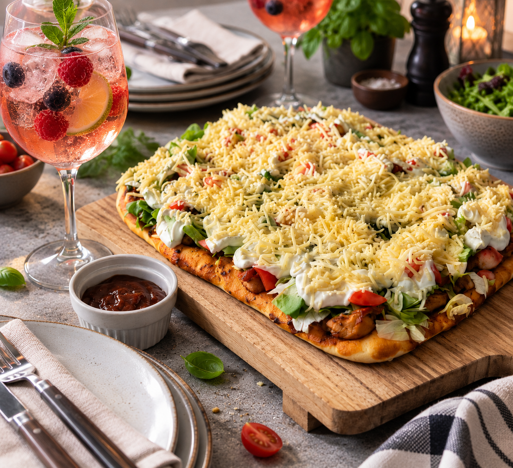

Unsere Klassiker
Frische Pizza

Zutaten
Hefeteig
21 gFrische Hefe
220 mlWarmes Wasser
½ TLZucker
400 gMehl
1 TLSalz
2 ELÖl
Belag
500 gHähnchenbrustfilet
1½ ELGyrosgewürz
1½ ELÖl
1Gemüsezwiebel
200 mlBBQ-Sauce von Kühne oder Juli's BBQ-Sauce
½Eisbergsalat
1Gurke
350 gTomaten
200 gGeriebener Käse
Dressing
400 gSchmand
100 gSalatmayonnaise
1 Pck.Dillkräutermischung
Zubereitung
- Für den Hefeteig die Hefe zusammen mit dem Zucker im warmen Wasser auflösen. Mehl, Salz und Öl dazugeben und alles zu einem glatten Teig verkneten. Abgedeckt an einem warmen Ort etwa 30 Minuten gehen lassen.
- Währenddessen das Hähnchenbrustfilet in mundgerechte Würfel schneiden. Mit Gyrosgewürz und Öl vermengen und in einer heißen Pfanne nur kurz anbraten. Das Fleisch soll etwas Farbe bekommen, aber noch nicht vollständig durchgegart sein, da es im Backofen weitergart. Die Gemüsezwiebel schälen und klein schneiden.
- Ein sauberes Backblech dünn mit Öl einfetten. Den Hefeteig daraufgeben und mit den Händen gleichmäßig bis an die Ränder verteilen. Anschließend mit der BBQ-Sauce bestreichen und Hähnchen sowie Zwiebel darauf verteilen. Den belegten Teig nochmals etwa 20 Minuten gehen lassen.
- Für eine besonders knusprige Kruste einen Pizzastein in den kalten Backofen legen und gemeinsam mit dem Ofen auf 200 °C Ober-/Unterhitze vorheizen. Das Blech auf den heißen Pizzastein stellen und die Pizza etwa 15 Minuten backen, bis der Boden goldbraun und das Hähnchen vollständig durchgegart ist.
- Für den frischen Belag Eisbergsalat, Gurke und Tomaten waschen und klein schneiden. Für das Dressing Schmand, Salatmayonnaise und Dillkräutermischung miteinander verrühren.
- Die Pizza nach Belieben warm oder abgekühlt mit Salat, Gurke und Tomaten belegen. Das Dressing darauf verteilen und zum Schluss mit dem geriebenen Käse bestreuen.
Tipp
Den Teig mit den Händen auf dem geölten Blech zu verteilen, habe ich von meinem Papa übernommen. Die Pizza schmeckt warm und kalt und lässt sich deshalb gut für Gäste vorbereiten.